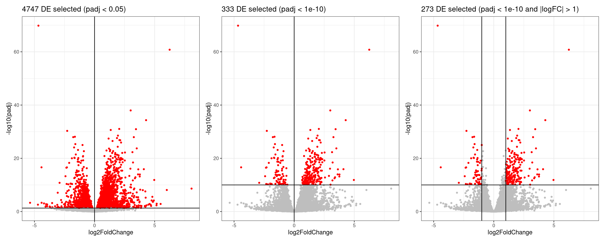
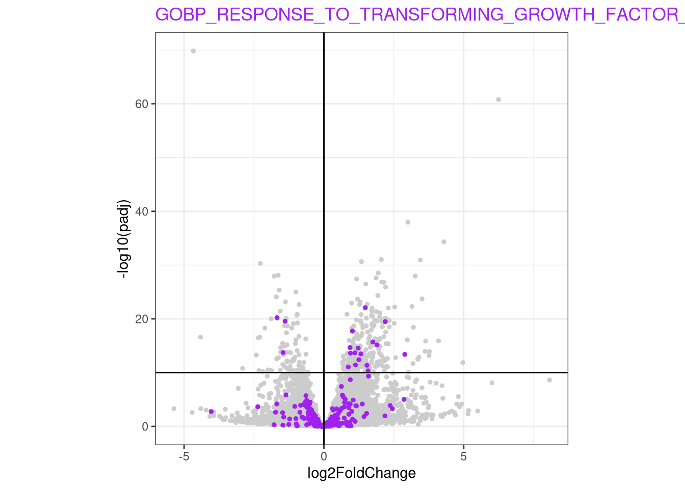
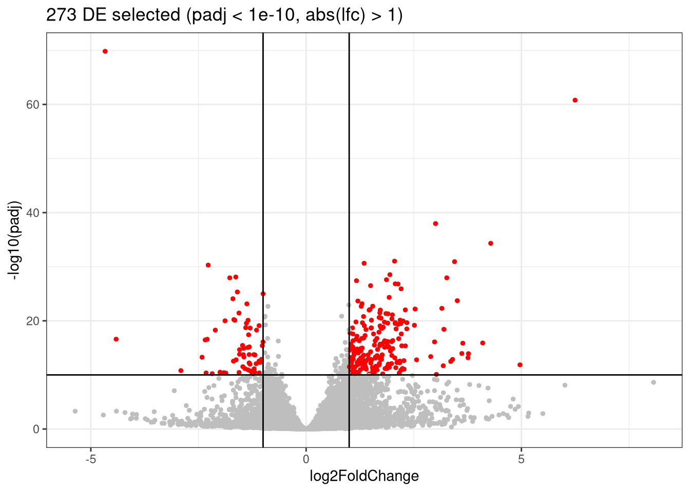
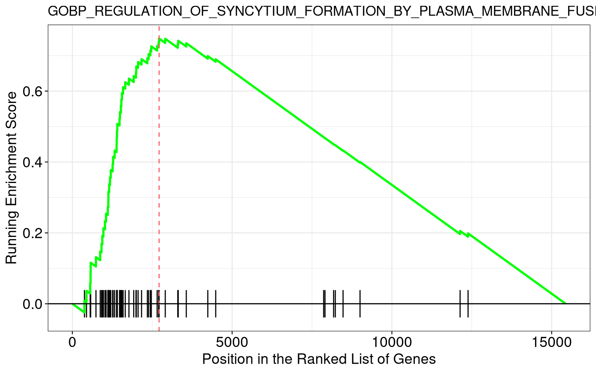

Chapter 7 Enrichment analyses
Objectives
- What is the aim of performing gene set enrichment analysis?
- What are the commonly-used gene set databases?
- Learn how to perform ORA and GSEA analyses
7.1 Objectives of an enrichment analysis
Once we have obtained a list of differentially expressed (DE) genes, the next question naturally to ask is what biological functions these DE genes may affect.
Gene set enrichment analyses (GSEA) evaluate the associations of a list of DE genes to a collection of pre-defined gene sets, where each gene set has a specific biological meaning. A gene set significantly enrichiched among DE genes could suggest that the corresponding biological process or pathway is significantly affected.
There are a huge amount of methods available for enrichment analyses. In this chapter, we will focus on two widely used methods: the over-representation analysis (ORA) and the Gene Set Enrichment Analysis (GSEA).
7.2 Gene sets
The definition of a gene set is very flexible and the construction of gene sets is straightforward. In most cases, gene sets are from public databases where huge efforts from scientific curators have already been made to carefully categorise genes into gene sets with clear biological meanings. For example, in a “cell cycle” gene set, all the genes are involved in the cell cycle process. Thus, if DE genes are significantly enriched in the “cell cycle” gene set, which means there are significantly more cell cycle genes differentially expressed than expected, we can conclude that the normal function of cell cycle process may be affected.
Nevertheless, gene sets can also be self-defined from individual studies, such as a set of genes in a network module from a co-expression network analysis, or a set of genes that are up-regulated in a certain disease.
The MSigDB database contains a collection of annotated gene sets such as those presented below.
Gene Ontology (GO)
Gene Ontology defines concepts/classes used to describe gene function, and relationships between these concepts. GO terms are organized in a directed acyclic graph, where edges between terms represent parent-child relationship. It classifies functions along three aspects.
- Molecular Function (MF): molecular activities of gene products
- Cellular Component (CC): where gene products are active
- Biological Process (BP) pathways and larger processes made up of the activities of multiple gene products.
Hallmark gene sets
Hallmark gene sets are curated gene sets that represent well-defined biological states or processes (e.g. Apoptosis, KRAS signaling, DNA repair).
7.3 Access the gene sets from MSigDB
The msigdbr CRAN package provides the MSigDB gene sets in a standard R data frame with key-value pairs.
One can use msigdbr_collections() to see the available collections:
## # A tibble: 26 × 5
## db_version gs_collection gs_subcollection gs_collection_name num_genesets
## <chr> <chr> <chr> <chr> <int>
## 1 2026.1.Hs C1 "" Positional 302
## 2 2026.1.Hs C2 "CGP" Chemical and Genetic… 3555
## 3 2026.1.Hs C2 "CP" Canonical Pathways 19
## 4 2026.1.Hs C2 "CP:BIOCARTA" BioCarta Pathways 292
## 5 2026.1.Hs C2 "CP:KEGG_LEGACY" KEGG Legacy Pathways 186
## 6 2026.1.Hs C2 "CP:KEGG_MEDICUS" KEGG Medicus Pathways 658
## 7 2026.1.Hs C2 "CP:PID" PID Pathways 196
## 8 2026.1.Hs C2 "CP:REACTOME" Reactome Pathways 1839
## 9 2026.1.Hs C2 "CP:WIKIPATHWAYS" WikiPathways 925
## 10 2026.1.Hs C3 "MIR:MIRDB" miRDB 2377
## # ℹ 16 more rowsThe msigdbr() function retrieves a data frame of gene sets and their
member genes. Below we set the species of interest, the GO collection
C5, and more specifically the Biological Process sub-collection. We
also select the gene set name and gene symbols among the 20 variables.
GO_BP <- msigdbr(species = "Homo sapiens",
collection = "C5",
subcollection = "BP") |>
dplyr::select(gs_name, gene_symbol)
GO_BP## # A tibble: 622,397 × 2
## gs_name gene_symbol
## <chr> <chr>
## 1 GOBP_10_FORMYLTETRAHYDROFOLATE_METABOLIC_PROCESS AASDHPPT
## 2 GOBP_10_FORMYLTETRAHYDROFOLATE_METABOLIC_PROCESS ALDH1L1
## 3 GOBP_10_FORMYLTETRAHYDROFOLATE_METABOLIC_PROCESS ALDH1L2
## 4 GOBP_10_FORMYLTETRAHYDROFOLATE_METABOLIC_PROCESS MTHFD1
## 5 GOBP_10_FORMYLTETRAHYDROFOLATE_METABOLIC_PROCESS MTHFD1L
## 6 GOBP_10_FORMYLTETRAHYDROFOLATE_METABOLIC_PROCESS MTHFD2L
## 7 GOBP_2FE_2S_CLUSTER_ASSEMBLY BOLA2
## 8 GOBP_2FE_2S_CLUSTER_ASSEMBLY BOLA2B
## 9 GOBP_2FE_2S_CLUSTER_ASSEMBLY FDX2
## 10 GOBP_2FE_2S_CLUSTER_ASSEMBLY FXN
## # ℹ 622,387 more rowsQuestion
How many genes belong to the GOBP_REGULATION_OF_LYMPHOCYTE_MIGRATION
geneset?
Solution
## # A tibble: 71 × 2
## gs_name gene_symbol
## <chr> <chr>
## 1 GOBP_REGULATION_OF_LYMPHOCYTE_MIGRATION ABL1
## 2 GOBP_REGULATION_OF_LYMPHOCYTE_MIGRATION ABL2
## 3 GOBP_REGULATION_OF_LYMPHOCYTE_MIGRATION ADAM10
## 4 GOBP_REGULATION_OF_LYMPHOCYTE_MIGRATION ADAM17
## 5 GOBP_REGULATION_OF_LYMPHOCYTE_MIGRATION ADAM8
## 6 GOBP_REGULATION_OF_LYMPHOCYTE_MIGRATION ADTRP
## 7 GOBP_REGULATION_OF_LYMPHOCYTE_MIGRATION AIF1
## 8 GOBP_REGULATION_OF_LYMPHOCYTE_MIGRATION AIRE
## 9 GOBP_REGULATION_OF_LYMPHOCYTE_MIGRATION AKT1
## 10 GOBP_REGULATION_OF_LYMPHOCYTE_MIGRATION APOD
## # ℹ 61 more rowsQuestion
Retrieve human Hallmarks gene sets. How many different gene sets are
available?
Solution
hallmarks <- msigdbr(species = "Homo sapiens",
collection = "H") |>
dplyr::select(gs_name, gene_symbol)
hallmarks## # A tibble: 7,331 × 2
## gs_name gene_symbol
## <chr> <chr>
## 1 HALLMARK_ADIPOGENESIS ABCA1
## 2 HALLMARK_ADIPOGENESIS ABCB8
## 3 HALLMARK_ADIPOGENESIS ACAA2
## 4 HALLMARK_ADIPOGENESIS ACADL
## 5 HALLMARK_ADIPOGENESIS ACADM
## 6 HALLMARK_ADIPOGENESIS ACADS
## 7 HALLMARK_ADIPOGENESIS ACLY
## 8 HALLMARK_ADIPOGENESIS ACO2
## 9 HALLMARK_ADIPOGENESIS ACOX1
## 10 HALLMARK_ADIPOGENESIS ADCY6
## # ℹ 7,321 more rows##
## HALLMARK_ADIPOGENESIS
## 200
## HALLMARK_ALLOGRAFT_REJECTION
## 200
## HALLMARK_ANDROGEN_RESPONSE
## 101
## HALLMARK_ANGIOGENESIS
## 36
## HALLMARK_APICAL_JUNCTION
## 200
## HALLMARK_APICAL_SURFACE
## 44
## HALLMARK_APOPTOSIS
## 161
## HALLMARK_BILE_ACID_METABOLISM
## 112
## HALLMARK_CHOLESTEROL_HOMEOSTASIS
## 74
## HALLMARK_COAGULATION
## 138
## HALLMARK_COMPLEMENT
## 200
## HALLMARK_DNA_REPAIR
## 150
## HALLMARK_E2F_TARGETS
## 200
## HALLMARK_EPITHELIAL_MESENCHYMAL_TRANSITION
## 200
## HALLMARK_ESTROGEN_RESPONSE_EARLY
## 200
## HALLMARK_ESTROGEN_RESPONSE_LATE
## 200
## HALLMARK_FATTY_ACID_METABOLISM
## 158
## HALLMARK_G2M_CHECKPOINT
## 200
## HALLMARK_GLYCOLYSIS
## 200
## HALLMARK_HEDGEHOG_SIGNALING
## 36
## HALLMARK_HEME_METABOLISM
## 201
## HALLMARK_HYPOXIA
## 200
## HALLMARK_IL2_STAT5_SIGNALING
## 200
## HALLMARK_IL6_JAK_STAT3_SIGNALING
## 90
## HALLMARK_INFLAMMATORY_RESPONSE
## 201
## HALLMARK_INTERFERON_ALPHA_RESPONSE
## 97
## HALLMARK_INTERFERON_GAMMA_RESPONSE
## 200
## HALLMARK_KRAS_SIGNALING_DN
## 200
## HALLMARK_KRAS_SIGNALING_UP
## 201
## HALLMARK_MITOTIC_SPINDLE
## 199
## HALLMARK_MTORC1_SIGNALING
## 200
## HALLMARK_MYC_TARGETS_V1
## 200
## HALLMARK_MYC_TARGETS_V2
## 58
## HALLMARK_MYOGENESIS
## 200
## HALLMARK_NOTCH_SIGNALING
## 32
## HALLMARK_OXIDATIVE_PHOSPHORYLATION
## 201
## HALLMARK_P53_PATHWAY
## 200
## HALLMARK_PANCREAS_BETA_CELLS
## 40
## HALLMARK_PEROXISOME
## 104
## HALLMARK_PI3K_AKT_MTOR_SIGNALING
## 105
## HALLMARK_PROTEIN_SECRETION
## 97
## HALLMARK_REACTIVE_OXYGEN_SPECIES_PATHWAY
## 49
## HALLMARK_SPERMATOGENESIS
## 135
## HALLMARK_TGF_BETA_SIGNALING
## 54
## HALLMARK_TNFA_SIGNALING_VIA_NFKB
## 200
## HALLMARK_UNFOLDED_PROTEIN_RESPONSE
## 113
## HALLMARK_UV_RESPONSE_DN
## 144
## HALLMARK_UV_RESPONSE_UP
## 158
## HALLMARK_WNT_BETA_CATENIN_SIGNALING
## 42
## HALLMARK_XENOBIOTIC_METABOLISM
## 2007.4 Input data
We will use the results of the differential expression analysis
comparing KD to mock epithelial cells. The following code summarizes
the full DESeq2 analysis that you have applied in the previous
chapter. We will focus on the genes that have an adjusted p-value
(i.e. those that have been tested).
7.5 Over-representation analysis
7.5.1 Principle
The idea behind the ORA is to test whether your list of differentially expressed genes (DE) is enriched in certain biological categories (such as gene sets from Gene Ontology terms, KEGG pathways, or Reactome pathways), i.e, if it contains more genes from these categories than would be expected by chance.
Step 1: selection of DE genes
To perform an over representation analysis, we first need to define the genes we will consider as differentially expressed (DE).

We could consider all genes that have a p-adjusted value < 0.05 (left), in which case we would select 4747 genes. This number is probably too large, so we should probably be more restrictive and select a smaller set of genes, using a more stringent filtering on the p-adjusted value (center). We could also consider filtering using the logFC, which could also make biological sense (right).
Whatever thresholds are used, the idea here is to start from a selection of genes that we will consider as our DE genes. The selection is a choice the user has to make.
Here, we will apply the selection criteria illustrated in the second volcano. Hence, among all the genes in our experiment (called the universe), we will consider the 333 genes with a p-adjusted value < 10^{-10} as our genes of interest or DE genes.
Step 2: Counting
For each biological category, we can count how many genes from our DE genes are in that category, and how many are not.
Let’s say we want to test the enrichment of the GOBP_ENDODERM_DEVELOPMENT gene set. The volcano plot below highlights the genes from the set in blue.

We will count the number of DE genes from that are in GOBP_ENDODERM_DEVELOPMENT gene set, and how many are not.
| GO | not_GO | |
|---|---|---|
| DE | 9 | 324 |
| not_DE | 58 | 15048 |
Step 3: Statistical test
We can now apply a Fisher’s exact (or hypergeometric test) that will test whether there is a significant enrichment of DE genes in the GO term.
##
## Fisher's Exact Test for Count Data
##
## data: count_mat
## p-value = 1.29e-05
## alternative hypothesis: true odds ratio is greater than 1
## 95 percent confidence interval:
## 3.569026 Inf
## sample estimates:
## odds ratio
## 7.2031137.5.2 Running an ORA with the clusterProfiler package
In practice, the analysis presented above can be executed using any of the very many packages that are available.
Here, we will use the clusterProfiler package to test if any GO terms from the Biological Process is enriched among our DE genes.
Let’s start be defining our DE genes and our universe.
padj_thr <- 1e-10
log2FC_thr <- 0
genes_DE <- res_tbl |>
filter(padj <= padj_thr,
abs(log2FoldChange) >= log2FC_thr) |>
pull(gene)
geneList <- res_tbl$geneWe won’t set any (adjusted) p-value threshold and filter the results by hand to be able to adapt the it without re-running the analysis.
library(clusterProfiler)
ORA_res <- enricher(gene = genes_DE,
universe = geneList,
pAdjustMethod = "BH",
qvalueCutoff = 1,
pvalueCutoff = 1,
TERM2GENE = GO_BP) |>
as_tibble()
ORA_res_tbl_GO <- ORA_res |>
filter(p.adjust < 0.05)
ORA_res_tbl_GO## # A tibble: 6 × 12
## ID Description GeneRatio BgRatio RichFactor FoldEnrichment zScore pvalue
## <chr> <chr> <chr> <chr> <dbl> <dbl> <dbl> <dbl>
## 1 GOBP_R… GOBP_RESPO… 19/302 240/12… 0.0792 3.20 5.49 8.01e-6
## 2 GOBP_C… GOBP_CD4_P… 6/302 26/122… 0.231 9.33 6.77 3.30e-5
## 3 GOBP_F… GOBP_FORMA… 11/302 100/12… 0.11 4.45 5.51 3.52e-5
## 4 GOBP_E… GOBP_ENDOD… 9/302 67/122… 0.134 5.43 5.79 3.72e-5
## 5 GOBP_S… GOBP_SYMBI… 11/302 105/12… 0.105 4.24 5.30 5.55e-5
## 6 GOBP_C… GOBP_CELL_… 15/302 187/12… 0.0802 3.24 4.92 6.25e-5
## # ℹ 4 more variables: p.adjust <dbl>, qvalue <dbl>, geneID <chr>, Count <int>In the output data frame, there are the following columns:
ID: ID of the gene set. In this example analysis, it is the GO ID.Description: Readable description. Here it is the name of the GO term.GeneRatio: Number of DE genes in the gene set / total number of DE genes.BgRatio: Size of the gene set / total number of genes.pvalue: p-value calculated from the hypergeometric distribution.p.adjust: Adjusted p-value by the BH method.qvalue: q-value which is another way for controlling false positives in multiple testings.geneID: A list of DE genes in the gene set.Count: Number of DE genes in the gene set.
You may have noticed the total number of DE genes changes. We defined 333 DE genes, but only 302 DE genes are included in the enrichment result table (in the GeneRatio column). Similarly, our universe had 15439 genes, but the total number of tested genes was only 12215 in the result table. The main reason is by default DE genes not annotated to any GO gene set are filtered out.
7.5.3 Visualisation
The clusterProfiler documentation provides a chapter on the visualization of functional enrichment results.
Another useful visualisation, that links the enrichment results back to the whole set of results is to highlight the genes in a particular set of interest on the volcano plot.
Let’s inspect genes from the
GOBP_RESPONSE_TO_TRANSFORMING_GROWTH_FACTOR_BETAon the volcano
my_geneset <- "GOBP_RESPONSE_TO_TRANSFORMING_GROWTH_FACTOR_BETA"
genes_from_geneset <- GO_BP |>
filter(gs_name == my_geneset) |>
pull(gene_symbol)
padj_thr <- 1e-10
log2FC_thr <- 0
res_tbl |>
ggplot(aes(x = log2FoldChange, y = -log10(padj))) +
geom_point(color = "gray80", size = 1) +
geom_point(data = res_tbl |>
filter(gene %in% genes_from_geneset),
color = "purple", size = 1) +
theme(legend.position = "none") +
geom_hline(yintercept = -log10(padj_thr)) +
geom_vline(xintercept = log2FC_thr) +
geom_vline(xintercept = -log2FC_thr) +
ggtitle(paste0(length(genes_DE2), " DE selected (padj < ", padj_thr, ")")) +
ggtitle(my_geneset) +
theme_bw() +
theme(title = element_text(color = "purple"),
axis.title = element_text(color = "black"),
aspect.ratio = 1)
7.5.4 Conclusion about ORA method
This approach is straightfoward and very fast. Its major drawback however is that we need to define a cutoff to differentiate DE from non-DE genes. Setting this threshold might have an effect on the results.
Question
Test different p-value and/or log fold-change thresholds to define the group of ‘DE genes’.
Solution
padj_thr <- 1e-10
log2FC_thr <- 1
genes_DE <- res_tbl |>
filter(padj <= padj_thr,
abs(log2FoldChange) >= log2FC_thr) |>
pull(gene)
geneList <- res_tbl$gene
res_tbl |>
ggplot(aes(x = log2FoldChange, y = -log10(padj))) +
geom_point(aes(color = gene %in% genes_DE), size = 1) +
scale_color_manual(values = c("gray", "red")) +
theme_bw() +
theme(legend.position = "none") +
geom_hline(yintercept = -log10(padj_thr)) +
geom_vline(xintercept = -log2FC_thr) +
geom_vline(xintercept = log2FC_thr) +
ggtitle(paste0(length(genes_DE), " DE selected (padj < ", padj_thr,
", abs(lfc) > ", log2FC_thr, ")"))
ORA_res_new_thr <- enricher(gene = genes_DE,
universe = geneList,
pAdjustMethod = "BH",
qvalueCutoff = 1,
pvalueCutoff = 1,
TERM2GENE = GO_BP) |>
as_tibble()
ORA_res_new_thr |>
filter(p.adjust < 0.05)## # A tibble: 0 × 12
## # ℹ 12 variables: ID <chr>, Description <chr>, GeneRatio <chr>, BgRatio <chr>,
## # RichFactor <dbl>, FoldEnrichment <dbl>, zScore <dbl>, pvalue <dbl>,
## # p.adjust <dbl>, qvalue <dbl>, geneID <chr>, Count <int>## Loading required package: Vennerablegeneset_list <- list(prev_thr = ORA_res_tbl_GO$ID,
new_thr = ORA_res_GO_new_thr$ID)
plot(Venn(geneset_list))
Question
Repeat the ORA analysis using this time the Hallmarks genesets.
Solution
# Define our DE genes
padj_thr <- 1e-10
log2FC_thr <- 0
genes_DE <- res_tbl |>
filter(padj <= padj_thr,
abs(log2FoldChange) >= log2FC_thr) |>
pull(gene)
geneList <- res_tbl$gene
hallmarks <- msigdbr(species = "Homo sapiens",
collection = "H") |>
dplyr::select(gs_name, gene_symbol)
ORA_hallmarks <- enricher(gene = genes_DE,
universe = geneList,
pAdjustMethod = "BH",
qvalueCutoff = 1,
pvalueCutoff = 1,
TERM2GENE = hallmarks) |>
as_tibble()
ORA_hallmarks_tbl <- ORA_hallmarks |>
filter(p.adjust < 0.05)
ORA_hallmarks_tbl## # A tibble: 1 × 12
## ID Description GeneRatio BgRatio RichFactor FoldEnrichment zScore pvalue
## <chr> <chr> <chr> <chr> <dbl> <dbl> <dbl> <dbl>
## 1 HALLMA… HALLMARK_E… 15/117 188/36… 0.0798 2.5 3.83 7.87e-4
## # ℹ 4 more variables: p.adjust <dbl>, qvalue <dbl>, geneID <chr>, Count <int>7.6 Gene set enrichment analysis
7.6.1 Principle
Gene set enrichment analysis (GSEA) refers to a broad family of tests. Here, we will define the principles based on (Subramanian et al. 2005), keeping in mind that the exact implementation will differ in different tools.
Gene Set Enrichment Analysis (GSEA) is a statistical method used to determine whether predefined sets of genes (for example, genes belonging to a GO term) show systematic differences in expression between two biological conditions. Instead of focusing only on individual genes, GSEA evaluates the collective behavior of gene groups.
The major advantage of GSEA approaches is that they don’t rely on defining DE genes.
Step 1: Gene ranking
The first step is to order the genes of interest. Genes could be ranked for example by the value of the test statistic or by their p-value.
Depending on the metric used for the ranking, genes will be ordered from the most up-regulated to the most down-regulated (if the test statistic is used for instance) or by the most significantly DE (no matter if they are up or down-regulated) to genes not differentially expressed.
Step 2: Check where the genes of a specific geneset appear
For a given gene set (a GO-term, or a KEGG pathaway for example), the idea is to check if these genes tend to appear toward the top or bottom of the ranked list, rather than being randomly scattered.
Step 3: Compute an Enrichment Score (ES)
The algorithm walks down the ranked list, increasing a running-sum statistic when it encounters a gene from the set, and decreasing it otherwise.
The positive score is defined by \(\frac{n_{genes} - n_{genes~in~set}}{n_{genes~in~set}}\), and the decreasing score by -1, so that the sum of all genes in the set and those not in the set becomes zero.
The maximum deviation from zero is the Enrichment Score (ES), reflecting how strongly the gene set is enriched at either end of the ranking.

Step 4: Assess significance by permutation
To evaluate whether the observed Enrichment Score (ES) is greater than expected by chance, GSEA performs permutations (of either gene labels or sample labels). This generates a null distribution to compute a p-value.
An Enrichment Score (ES) is recomputed for each permutation. The p-value is given by the proportion of permutations where the permuted ES is at least as extreme as the observed ES:
\[p = \frac{\#\{ ES_{\text{permuted}} \ge ES_{\text{observed}} \}}{\text{total number of permutations}}\]
7.6.2 Running a GSEA with the clusterProfiler package
Here, we will re-use the clusterProfiler
package to run a GSEA
this time, using hallmark genesets.
# Ranking our DE results by the statistic value used in DESeq2
geneList <- res_tbl$stat
names(geneList)<- res_tbl$gene
geneList <- geneList[order(geneList, decreasing = TRUE)]
set.seed(1)
GSEA_res <- GSEA(geneList,
TERM2GENE = hallmarks,
verbose = FALSE,
by = "fgsea",
pvalueCutoff = 1,
pAdjustMethod = "BH")
GSEA_hallmarks_tbl <- GSEA_res |>
as_tibble() |>
filter(p.adjust < 0.05)
GSEA_hallmarks_tbl## # A tibble: 24 × 12
## ID Description setSize enrichmentScore NES pvalue p.adjust qvalue
## <chr> <chr> <int> <dbl> <dbl> <dbl> <dbl> <dbl>
## 1 HALLMAR… HALLMARK_M… 58 0.699 2.45 1 e-10 2.5 e-9 6.26e-10
## 2 HALLMAR… HALLMARK_M… 199 0.525 2.16 1 e-10 2.5 e-9 6.26e-10
## 3 HALLMAR… HALLMARK_H… 176 0.483 1.99 3.64e- 8 5.07e-7 1.27e- 7
## 4 HALLMAR… HALLMARK_O… 199 0.475 1.95 4.05e- 8 5.07e-7 1.27e- 7
## 5 HALLMAR… HALLMARK_E… 188 0.479 1.95 8.56e- 8 8.56e-7 2.14e- 7
## 6 HALLMAR… HALLMARK_I… 138 0.480 1.91 4.09e- 6 2.56e-5 6.40e- 6
## 7 HALLMAR… HALLMARK_I… 62 0.530 1.88 1.44e- 4 6.01e-4 1.50e- 4
## 8 HALLMAR… HALLMARK_M… 198 -0.394 -1.85 1.89e- 7 1.57e-6 3.94e- 7
## 9 HALLMAR… HALLMARK_G… 184 0.446 1.81 3.24e- 6 2.32e-5 5.80e- 6
## 10 HALLMAR… HALLMARK_M… 146 0.452 1.78 3.06e- 5 1.53e-4 3.84e- 5
## # ℹ 14 more rows
## # ℹ 4 more variables: rank <int>, leading_edge <chr>, core_enrichment <chr>,
## # log2err <dbl>In the output data frame, there are the following columns:
ID: ID of the gene set. In this example analysis, it is the GO ID.Description: Readable description. Here it is the name of the GO term.setSize: Number of genes in this gene set that are present in your universe of tested genes.enrichmentScore: Raw enrichment score calculated from the running-sum statistic.NES: ES normalized by gene set size.pvalue: p-value calculated from the hypergeometric distribution.p.adjust: Adjusted p-value by the BH method.qvalue: q-value which is another way for controlling false positives in multiple testings.rank: Position in the ranked gene list where the running score reaches its maximum (the ES).leadingEdge: List of genes in the set contributing most to the ES (genes before the peak), often called the core enrichment.
The GSEA plot can be drawn with the gseaplot() function